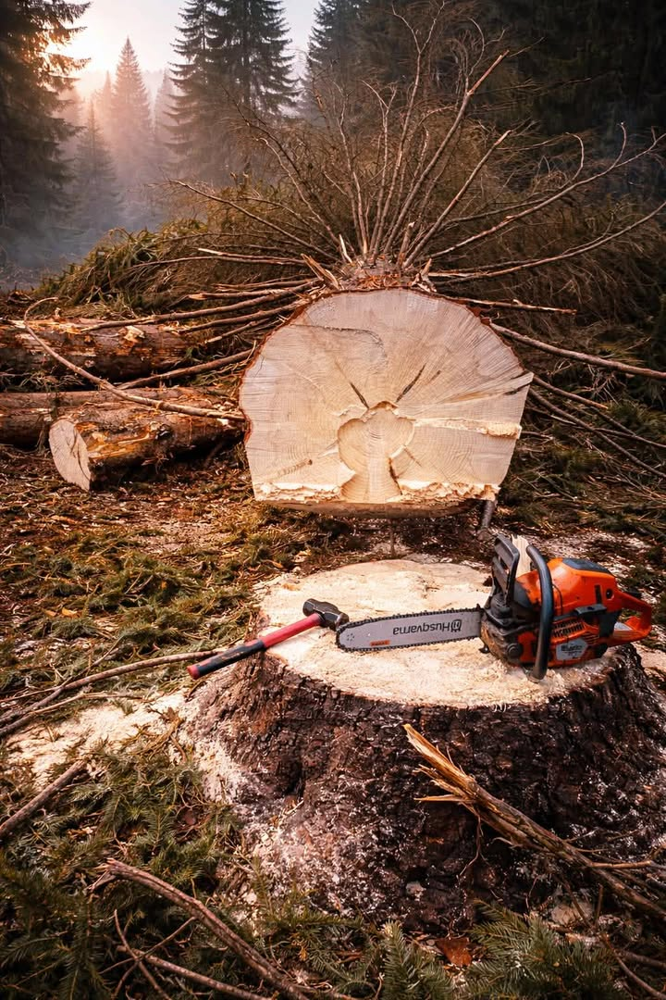
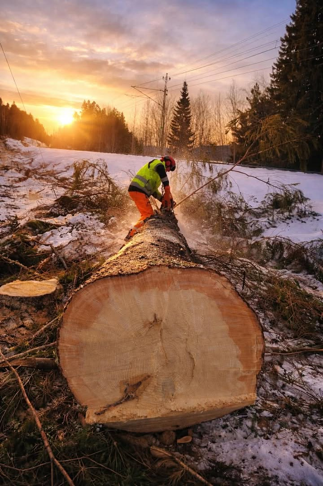
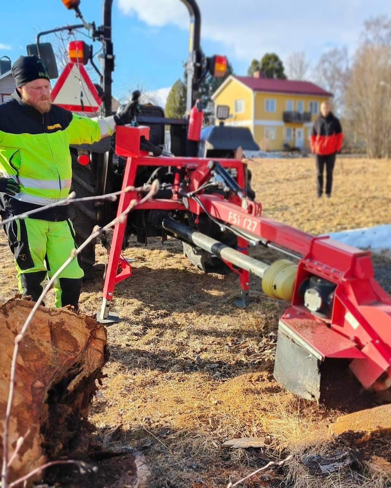
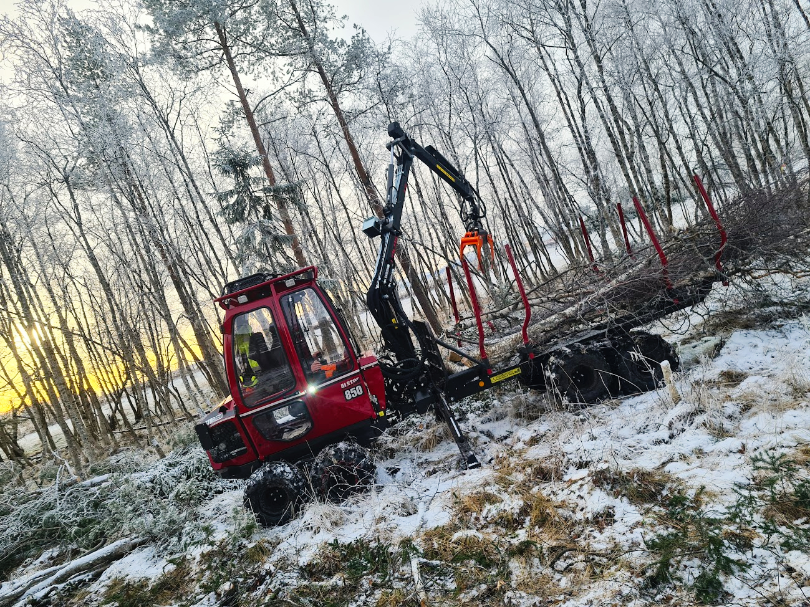
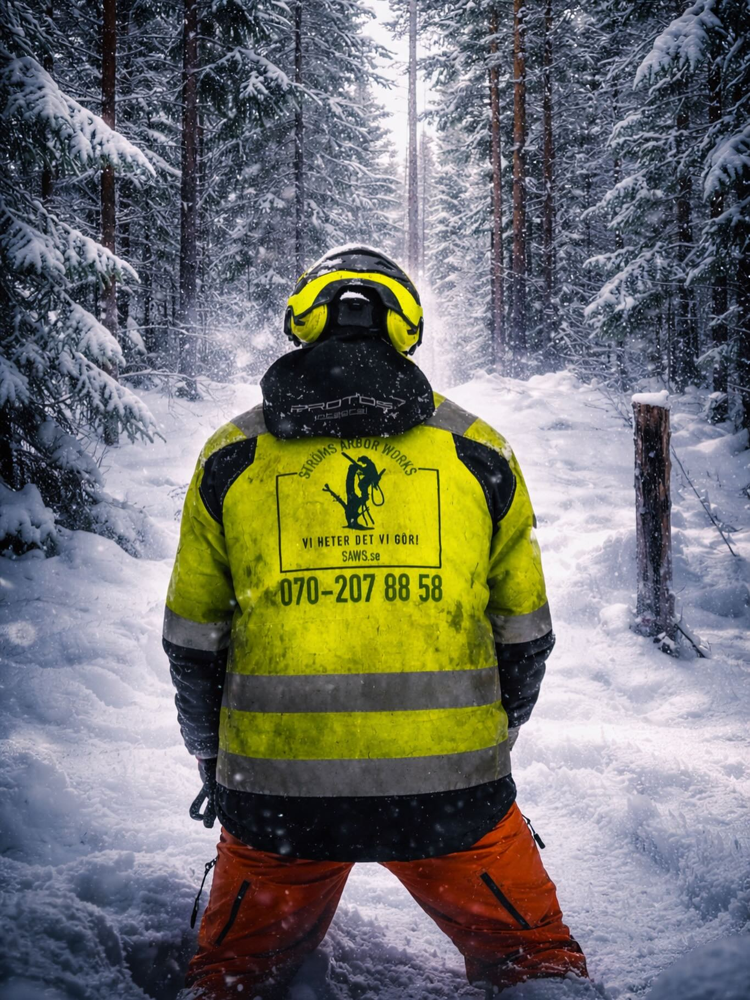
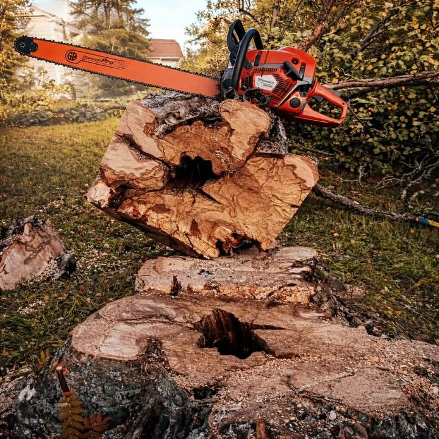

Sektionsfällning
Professionell trädfällning via kontrollerad sektionering i Strömsund. Perfekt när utrymmet är begränsat eller trädet är svårtillgängligt.
Läs mer
Vi sågar – högt som lågt!
SAWS utför professionell trädfällning, stubbfräsning och röjning i Strömsund och hela Jämtland. Certifierade arborister med rätt utrustning för varje uppdrag – stort som litet.
Vi hjälper fastighetsägare och kommuner i Strömsund med allt från enstaka träd till stora röjningsuppdrag – alltid med säkerhet och kvalitet i fokus.
Vi känner terrängen, klimatet och förutsättningarna i Jämtland. Vår lokalkännedom garanterar rätt bedömning och säker utförande varje gång.
Alla uppdrag utförs av certifierade arborister med rätt säkerhetsutrustning. Vi följer branschens högsta standarder och är fullt försäkrade.
Inga dolda kostnader. Vi ger alltid en tydlig offert innan arbetet börjar, och håller alltid det vi lovar. Din trygghet är vår prioritet.
Från sektionsfällning av höga träd till stubbfräsning och markröjning – vi erbjuder ett komplett utbud av arboristtjänster i Strömsund och Jämtland.

Professionell trädfällning via kontrollerad sektionering i Strömsund. Perfekt när utrymmet är begränsat eller trädet är svårtillgängligt.
Läs mer
Effektiv borttagning och fräsning av trädstubbar i Strömsund. Vi eliminerar stubben helt så att marken kan användas igen utan hinder.
Läs mer
Professionell trädextraktion och transport i Jämtland. Vi hanterar all logistik och ser till att virket transporteras säkert från platsen.
Läs mer
Markröjning och buskröjning för fastigheter och kommuner i Strömsund. Vi röjer effektivt och lämnar platsen städad och redo för nästa steg.
Läs merTa en titt på våra senaste arbeten. Vi är stolta över varje uppdrag vi utfört i Strömsund och runt om i Jämtland.

Vi mäter vår framgång i nöjda kunder. Läs vad de säger om att arbeta med SAWS.
"Extremt professionellt team. De fällde ett enormt gammalt träd som hängde över vårt hus i Strömsund – arbetet gick snabbt och säkert, och de städade upp allt efteråt. Kommer definitivt att anlita SAWS igen."
"Bästa trädfällarna i Jämtland utan tvekan. Tydlig offert, höll tidsplanen och resultatet överträffade våra förväntningar. Stubbfräsningen gjordes perfekt – inget spår kvar. Rekommenderas varmt!"
"Anlitade SAWS för ett stort röjningsuppdrag på vår fastighet i Strömsund. Imponerande effektivitet och kompetens. Prisvärt och ärligt – inga obehagliga överraskningar på fakturan. Topp i allt!"
Vi börjar alltid med en kostnadsfri besiktning på plats i Strömsund där vi bedömer trädets kondition, omgivning och svårighetsgrad. Därefter ger vi en tydlig offert utan dolda kostnader. På fällningsdagen säkrar vi arbetsområdet, utför sektionsfällning eller direktfällning beroende på förutsättningarna och hanterar allt risgallret. Vi lämnar alltid platsen städad och städar upp varje del av arbetsplatsen innan vi åker. Hela processen sker med fokus på säkerhet och minimal påverkan på omgivningen.
SAWS utgår från Strömsund och utför uppdrag i hela Jämtland, Härjedalen och Västernorrland. Vi arbetar regelbundet i Strömsunds kommun, Östersund, Krokom och kringliggande kommuner. Vid större röjnings- eller skogsuppdrag kan vi ta uppdrag ännu längre bort. Tveka inte att kontakta oss om du är osäker på om vi täcker ditt område – vi löser det oftast. Ring oss på 070-207 88 58 för snabb besked.
Priset varierar beroende på trädets storlek, läge och svårighetsgrad. Enkla fällningar på öppna ytor är naturligtvis billigare än komplicerade sektionsfällningar nära byggnader. Vi erbjuder alltid kostnadsfri offert på plats i Strömsund. Vi kan också göra en preliminär bedömning via bild om du skickar foton till info@saws.se. Det lönar sig att ta in offert – du kanske blir positivt överraskad av priset. ROT-avdrag kan gälla för privatpersoner.